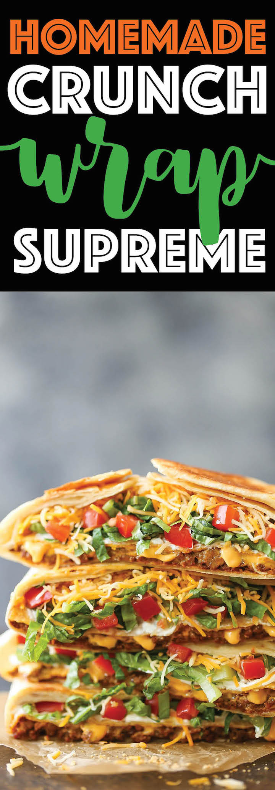

Crunchwrap

Description
Crunchwrap Supremes are loaded with seasoned ground beef, nacho cheese, sour cream and more all wrapped inside a flour tortilla. There is a corn tortilla hidden inside that gives it that crunch we all love!
Ingredients
- 2 tablespoons olive oil, divided
- 1 pound ground beef
- 1 (1.25-ounce) package taco seasoning
- 4 (12-inch) flour tortillas
- 1/2 cup nacho cheese
- 4 tostada shells
- 1/2 cup sour cream
-
2 cups shredded lettuce
- 1 Roma tomato, diced
- 1 cup shredded Mexican blend cheese
Steps
- Heat 1 tablespoon olive oil in a large skillet over medium high heat. Add ground beef and cook until beef has browned, about 3-5 minutes, making sure to crumble the beef as it cooks; stir in taco seasoning. Drain excess fat; set aside.
- Heat tortillas according to package instructions.
- Heat nacho cheese according to package instructions.
- Working one at a time, place ground beef mixture in the center of each tortilla. Top with nacho cheese and tostada shell. Spread sour cream in an even layer over the tostada shell; top with lettuce, tomato and cheese. Repeat with remaining tortillas.
- Fold the edges up and over the center. Continue to work your way around the tortilla, folding as tight as possible.
- Heat remaining 1 tablespoon olive oil in a large skillet. Place wrap seam-side down and cook until the underside is golden brown, about 2 minutes. Flip and cook wrap on the other side, about 1-2 minutes longer.
- Serve immediately.
Home